Popular order · Aug 2021
Geared light switch
A geared light switch was one of my most popular orders. A set of printed gears on a mounting plate turns a lever with two handles, which flips the switch.
I learned 3D printing by printing downloaded designs while I figured out the software, then moved on to designing my own parts. Later I advertised on Facebook Marketplace and made many sales, printing party favours for children’s birthdays, action figures for collectors, holiday decorations and items customers specifically asked for.
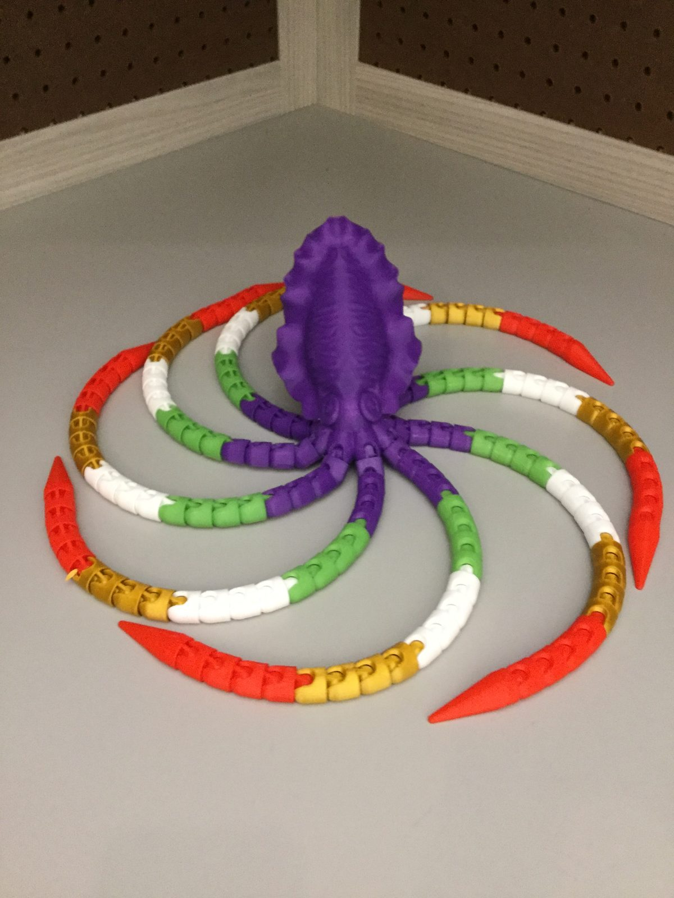

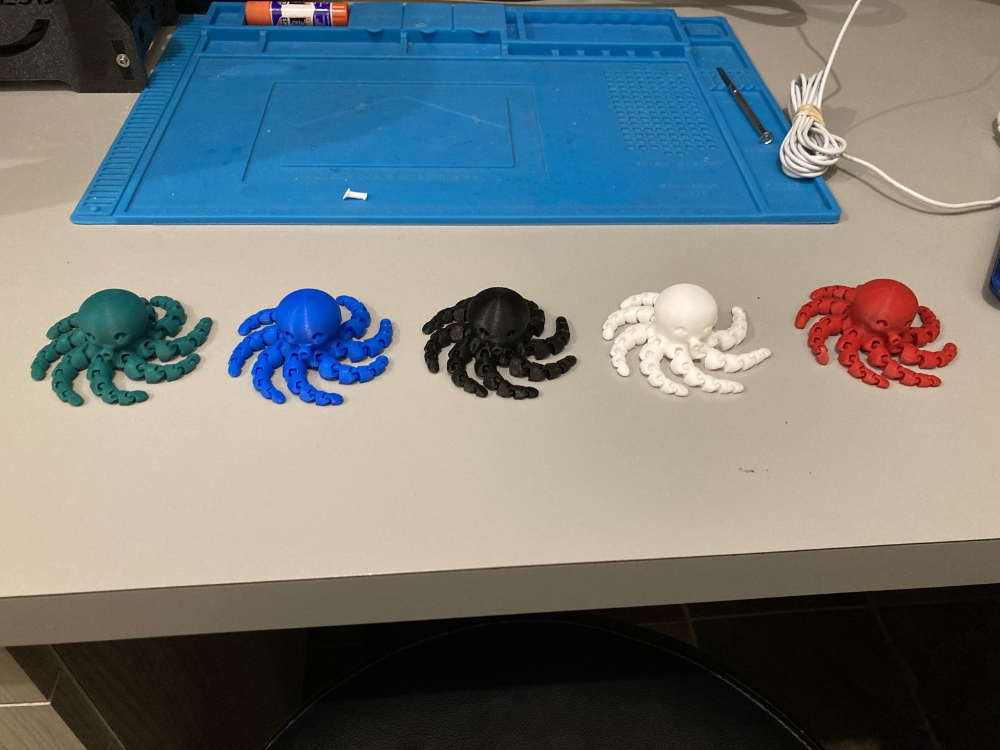
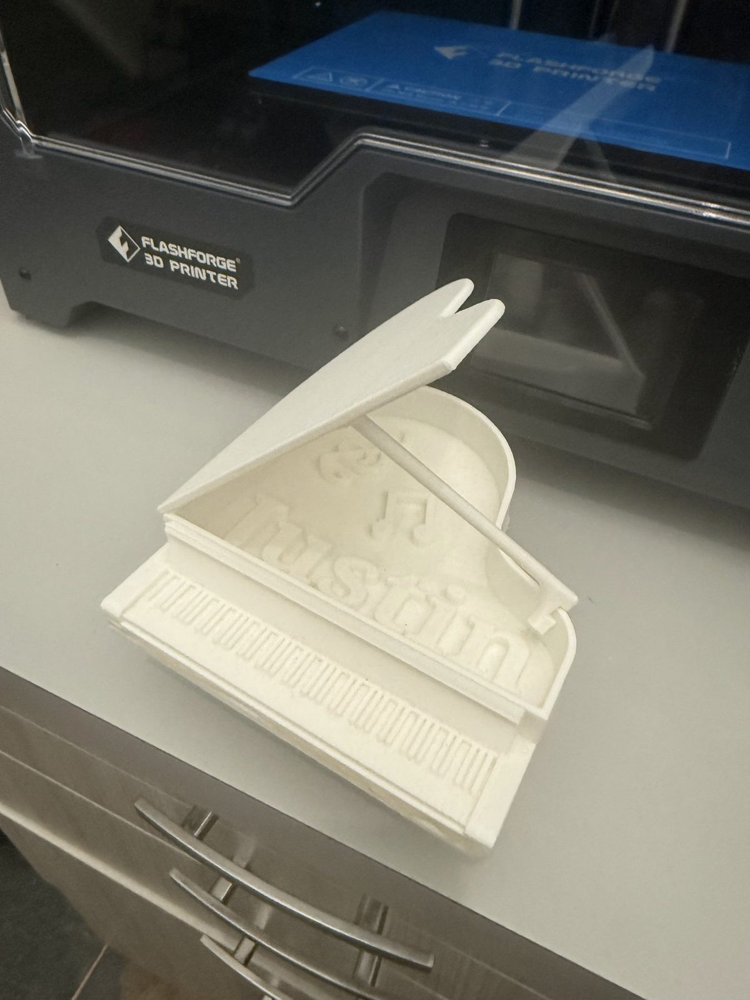
Before I had a printer, I experimented with a 3D pen at about age 10. Many of my first prints were designs I downloaded. They let me learn the software and the printer before I started designing parts of my own. I also learned to take the printer apart when it needed fixing. My second printer has two extruders, so it can print two materials in one job.
Over time, 3D printing became the way I make parts for my other projects, including the custom claw, joystick and button pieces in the claw machine.
To prepare prints I use FlashPrint, the slicing software for FlashForge printers, which turns a 3D model into the layer-by-layer instructions the printer follows.
Drawing in plastic by hand.
My first 3D printer, with a single extruder.
My second printer, with two extruders.
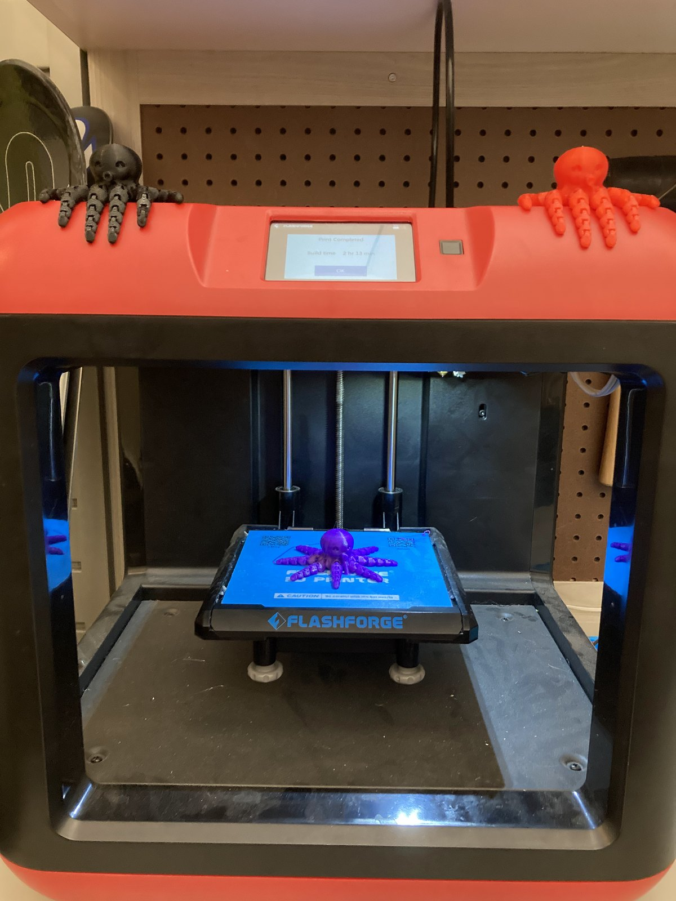
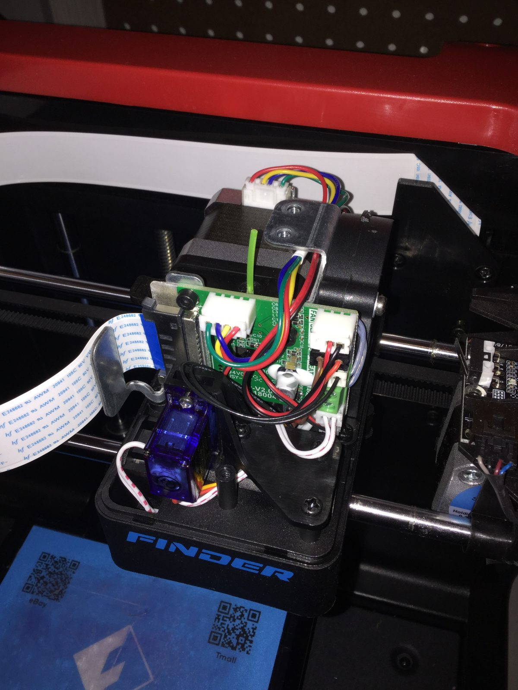
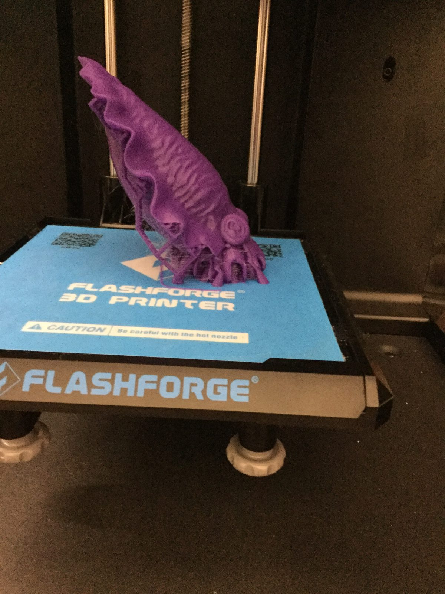
Printing lots of articulated octopuses and spiders taught me how much the design has to account for the printer. Those models are printed in one piece with small gaps between the segments so they move as soon as they come off the bed. If the gaps are too tight, the parts fuse together. The same idea matters in my own parts, like the gears in the light switch and the pieces of the claw machine, which have to fit and move together once they’re printed.
Printers need maintenance, and I learned to take the extruder apart myself when it needed fixing (photo above).
Several of my designs went through more than one version. The geared light switch was made first in blue and later in black. The claw for the claw machine went through more than one design before the round claw in the finished machine.
I advertised my work on Facebook Marketplace and made many sales. Customers hired me to design and print party favours for children’s birthdays, and I also printed action figures for collectors, Halloween and Christmas decorations, and items people specifically requested.
The designs were a mix, chosen to fit what each customer asked for. Some were my own custom designs, made from scratch for a particular request. Others were publicly available designs I found, printed and finished for the customer. Part of the job was deciding which approach made sense for each order.
It meant responding to what each customer asked for, designing for how the item would be used, producing the orders, and learning what people actually wanted. That’s different from printing something just because I find it interesting.
A geared light switch was one of my most popular orders. A set of printed gears on a mounting plate turns a lever with two handles, which flips the switch.
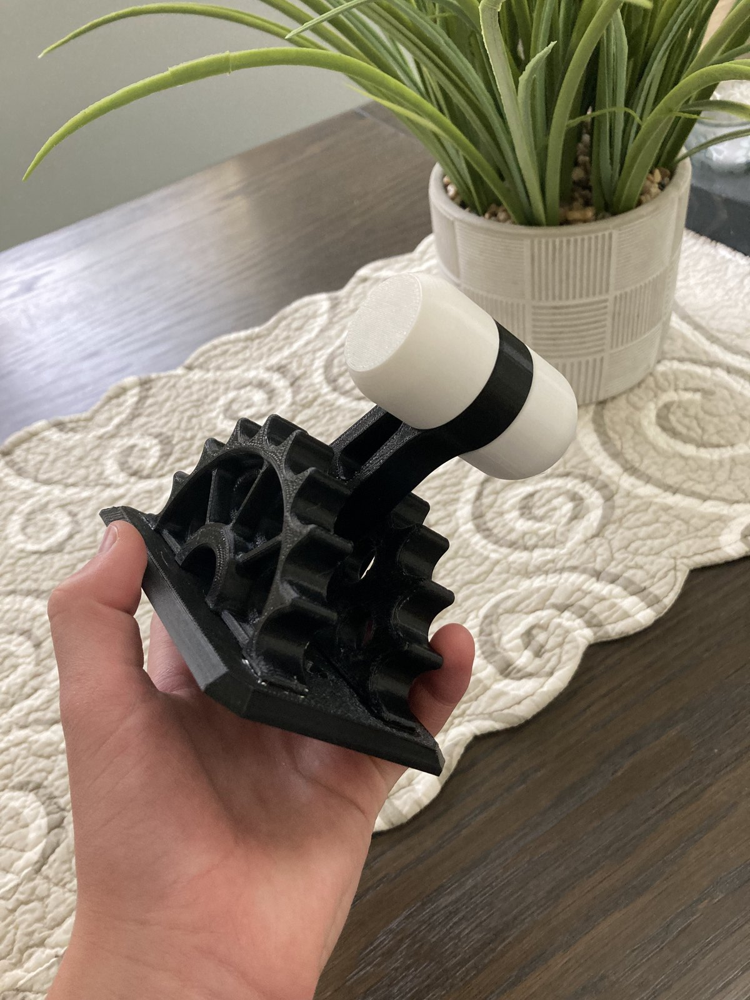
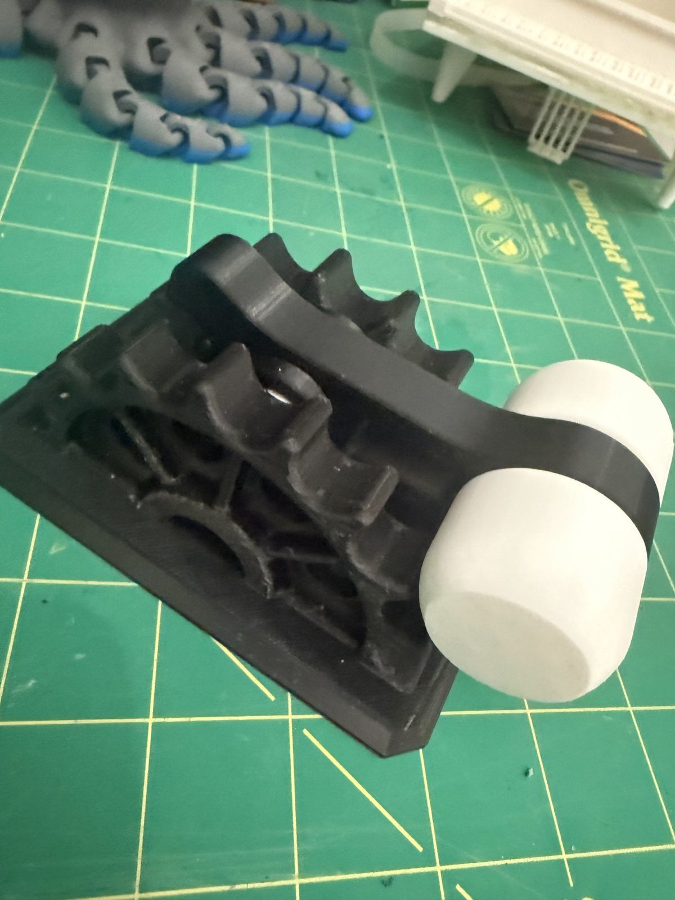
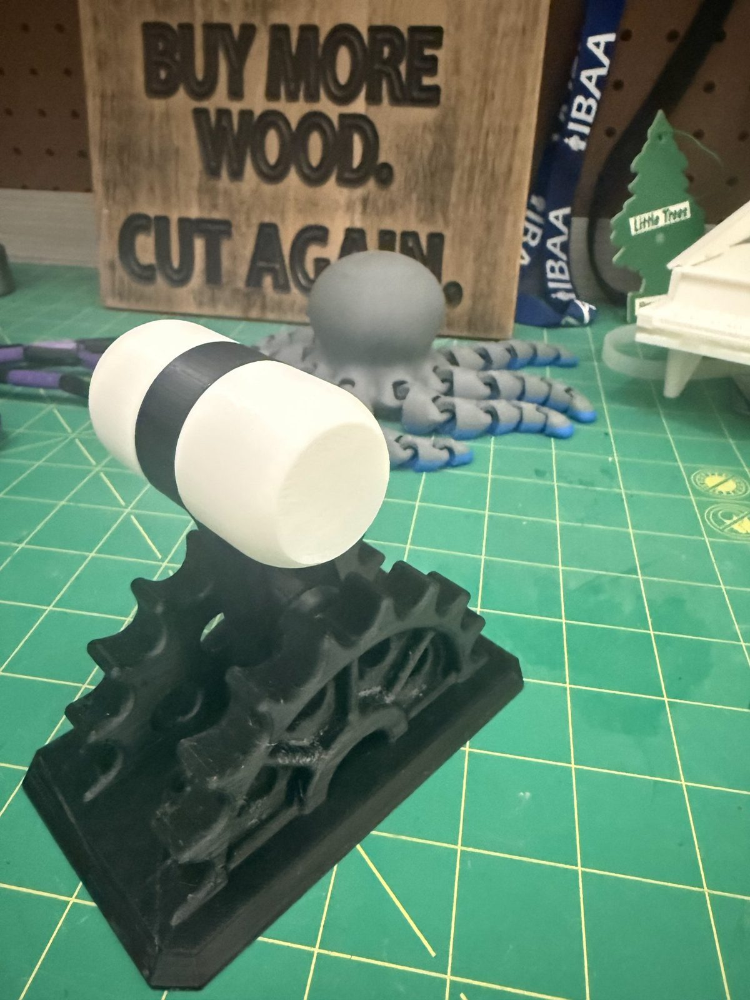
With many orders, printing for other people meant producing the same design many times, often in different colours, like the batches of octopuses and spiders further down this page.
Some of the things I’ve printed, including pieces for customers. Like my orders, they’re a mix of my own designs and publicly available ones.
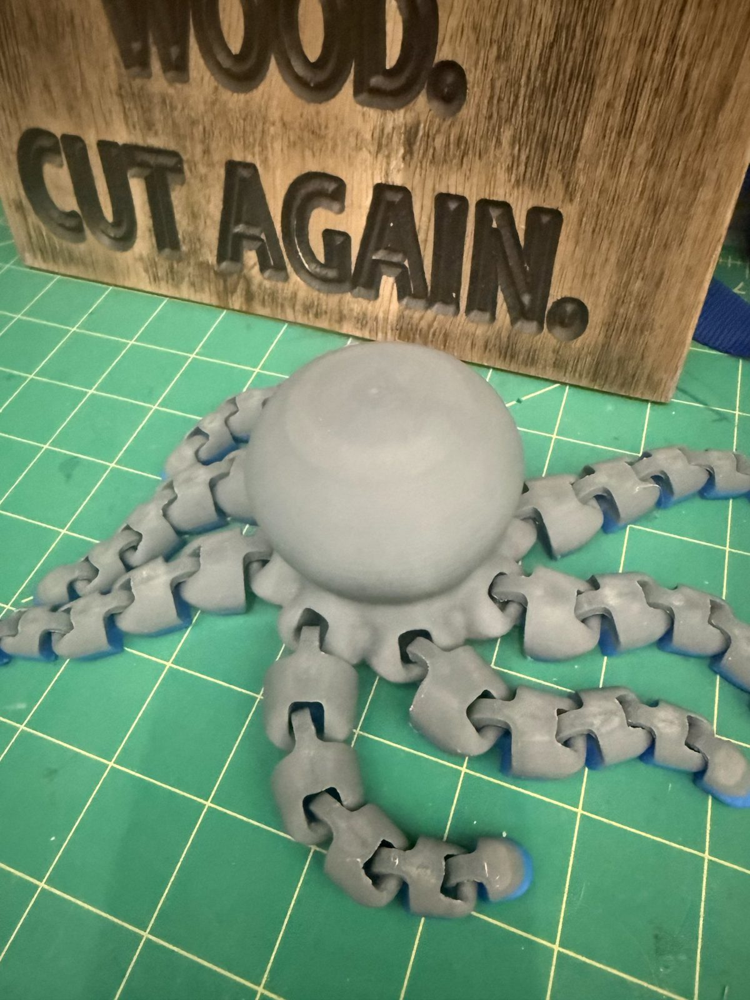
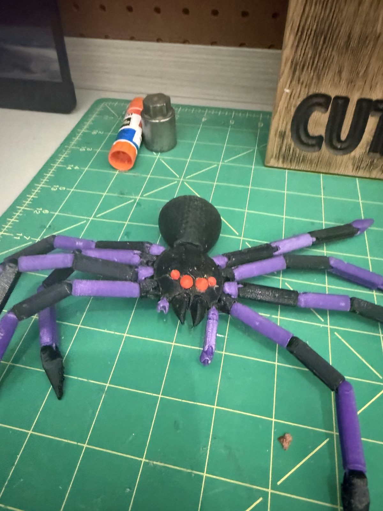
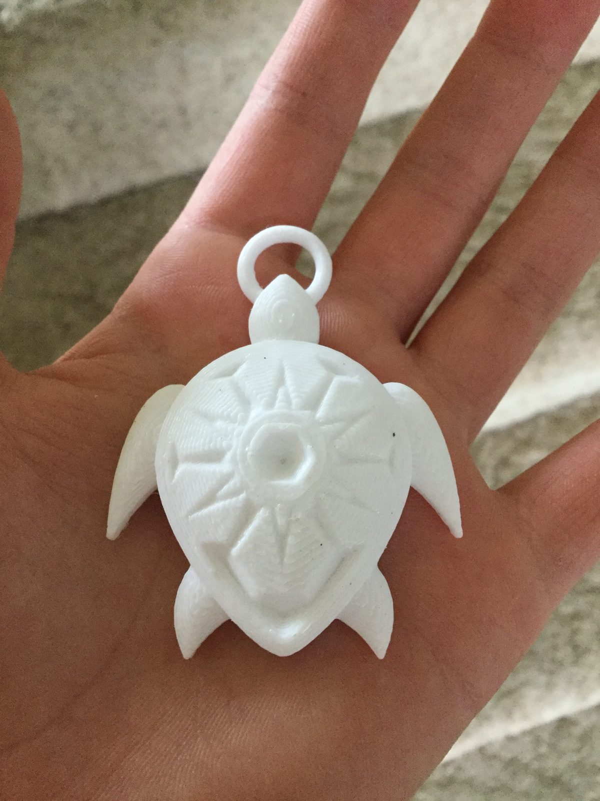
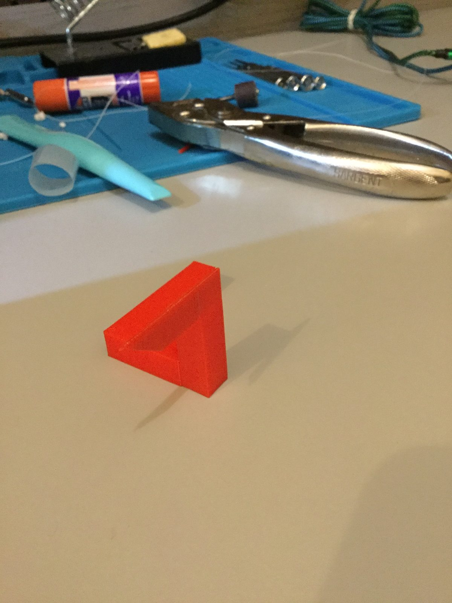
3D printing is what makes most of my other projects possible. It let me make my own claw, joystick and buttons for the claw machine, the custom door handle for my door lock, and the whole body and claw of my robotic arm. Printing for customers also taught me to think about who will use something and how, not just whether it prints.